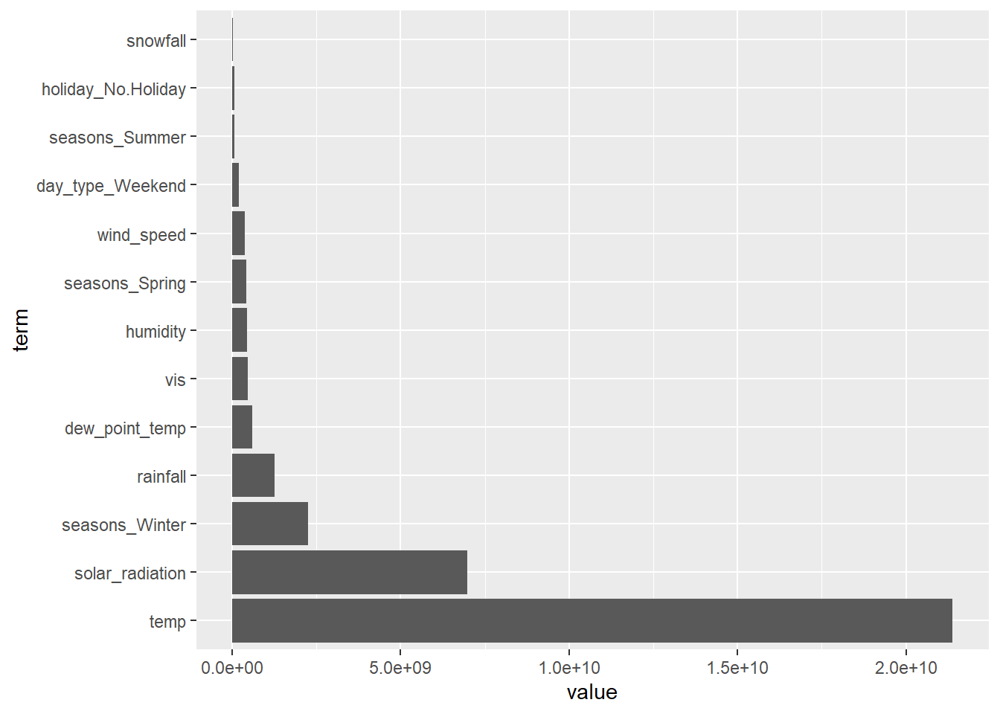

set.seed(11)
bike_split <- initial_split(bike_data, prop = 0.75, strata = seasons)
bike_train <- training(bike_split)
bike_test <- testing(bike_split)
bike_10_fold <- vfold_cv(bike_train, 10)New Models - Regression Expansion
Purpose: This home builds on the exercises listed in Homework 8. Homework 8 primarily consisted of data analysis and multiple linear regression models, including complex models with interaction. Homework 9 now uses multiple functions to run lasso, regression trees, random bagging, and random forests. The best model is deterined at the end and presented. Models are fit to the entire training set, evaluated on the test set using RMSE and MAE, and then the appropriate summaries are provided.
Setup from Homework 8:
I have used include=FALSE to take out all of the unnecessary coding bits. Below shows the test and training splits, as well as the MLR recipes. Notice how MLR recipe 3 has the lowest rmse and highest r-squared, so it will be used in analysis on this homework to compare to the other models.
MLR_rec1 <- recipe(bike_count ~ ., data = bike_train) |>
step_date(date, features = "dow") |>
step_mutate(day_type = factor(if_else(date_dow %in% c("Sat", "Sun"), "Weekend", "Weekday"))) |>
step_rm(date, date_dow) |>
step_dummy(seasons, holiday, day_type) |>
step_normalize(all_numeric(), -bike_count)MLR_rec2 <- MLR_rec1 |>
step_interact(terms = ~starts_with("seasons")*starts_with("holiday") +
starts_with("seasons")*temp +
temp*rainfall)MLR_rec3 <- MLR_rec2 |>
step_poly(temp,
wind_speed,
vis,
dew_point_temp,
solar_radiation,
rainfall,
snowfall,
humidity,
degree = 2)MLR_CV_fit1 <- workflow() |>
add_recipe(MLR_rec1) |>
add_model(MLR_spec) |>
fit_resamples(bike_10_fold)
MLR_CV_fit2 <- workflow() |>
add_recipe(MLR_rec2) |>
add_model(MLR_spec) |>
fit_resamples(bike_10_fold)
MLR_CV_fit3 <- workflow() |>
add_recipe(MLR_rec3) |>
add_model(MLR_spec) |>
fit_resamples(bike_10_fold)rbind(MLR_CV_fit1 |> collect_metrics(),
MLR_CV_fit2 |> collect_metrics(),
MLR_CV_fit3 |> collect_metrics())# A tibble: 6 × 6
.metric .estimator mean n std_err .config
<chr> <chr> <dbl> <int> <dbl> <chr>
1 rmse standard 4284. 10 165. Preprocessor1_Model1
2 rsq standard 0.822 10 0.0151 Preprocessor1_Model1
3 rmse standard 3156. 10 267. Preprocessor1_Model1
4 rsq standard 0.898 10 0.0176 Preprocessor1_Model1
5 rmse standard 3057. 10 210. Preprocessor1_Model1
6 rsq standard 0.904 10 0.0142 Preprocessor1_Model1final_fit <- workflow() |>
add_recipe(MLR_rec3) |>
add_model(MLR_spec) |>
last_fit(bike_split)
final_fit |>
collect_metrics()# A tibble: 2 × 4
.metric .estimator .estimate .config
<chr> <chr> <dbl> <chr>
1 rmse standard 3268. Preprocessor1_Model1
2 rsq standard 0.896 Preprocessor1_Model1final_fit |>
extract_fit_parsnip() |>
tidy()# A tibble: 29 × 5
term estimate std.error statistic p.value
<chr> <dbl> <dbl> <dbl> <dbl>
1 (Intercept) 22447. 1533. 14.6 6.85e-35
2 seasons_Spring -1923. 245. -7.84 1.56e-13
3 seasons_Summer 8083. 921. 8.78 3.56e-16
4 seasons_Winter -4193. 997. -4.21 3.70e- 5
5 holiday_No.Holiday 884. 191. 4.64 5.86e- 6
6 day_type_Weekend -1105. 169. -6.54 3.79e-10
7 seasons_Spring_x_holiday_No.Holiday -26.9 257. -0.105 9.17e- 1
8 seasons_Summer_x_holiday_No.Holiday -125. 239. -0.522 6.02e- 1
9 seasons_Winter_x_holiday_No.Holiday -323. 188. -1.72 8.77e- 2
10 seasons_Spring_x_temp 1850. 480. 3.86 1.48e- 4
# ℹ 19 more rowsTask 1: MLR
Assignment starts here!
Previously, we had decided that MLR 3 was the best model from last time due to the lowest RMSE and the highest $R^2$. Let’s go ahead and fit it to the entire training set and see how it predicts on the test set using MAE and RMSE
RMSE and MAE MLR
MLR_wkf3 <- workflow() |>
add_recipe(MLR_rec3) |>
add_model(MLR_spec)
MLR_wkf3 |>
last_fit(bike_split, metrics = metric_set(rmse, mae)) |>
collect_metrics()# A tibble: 2 × 4
.metric .estimator .estimate .config
<chr> <chr> <dbl> <chr>
1 rmse standard 3268. Preprocessor1_Model1
2 mae standard 2075. Preprocessor1_Model1Final Coefficients MLR
MLR_wkf3 |>
last_fit(bike_split, metrics = metric_set(rmse, mae)) |>
extract_fit_parsnip() |> tidy()# A tibble: 29 × 5
term estimate std.error statistic p.value
<chr> <dbl> <dbl> <dbl> <dbl>
1 (Intercept) 22447. 1533. 14.6 6.85e-35
2 seasons_Spring -1923. 245. -7.84 1.56e-13
3 seasons_Summer 8083. 921. 8.78 3.56e-16
4 seasons_Winter -4193. 997. -4.21 3.70e- 5
5 holiday_No.Holiday 884. 191. 4.64 5.86e- 6
6 day_type_Weekend -1105. 169. -6.54 3.79e-10
7 seasons_Spring_x_holiday_No.Holiday -26.9 257. -0.105 9.17e- 1
8 seasons_Summer_x_holiday_No.Holiday -125. 239. -0.522 6.02e- 1
9 seasons_Winter_x_holiday_No.Holiday -323. 188. -1.72 8.77e- 2
10 seasons_Spring_x_temp 1850. 480. 3.86 1.48e- 4
# ℹ 19 more rowsPretty solid! Let’s see how it will compare to future models now.
Task 2: Lasso
previously we decided that model 3 was the best one. We will be using that as a baseline for comparison.
Let’s make sure we are standardizing our predictors appropriately.
LASSO_recipe <- recipe(bike_count ~ ., data = bike_train) |>
step_date(date, features = "dow") |>
step_mutate(day_type = factor(if_else(date_dow %in% c("Sat", "Sun"), "Weekend", "Weekday"))) |>
step_rm(date, date_dow) |>
step_dummy(seasons, holiday, day_type) |>
step_zv(all_numeric(), -all_outcomes()) |>
step_normalize(all_numeric(), -all_outcomes())Using tune and the recipes, we go ahead and create the model instance and workflow.
LASSO_spec <- linear_reg(penalty = tune(), mixture = 1) |>
set_engine("glmnet")
LASSO_wkf <- workflow() |>
add_recipe(LASSO_recipe) |>
add_model(LASSO_spec)
LASSO_wkf══ Workflow ════════════════════════════════════════════════════════════════════
Preprocessor: Recipe
Model: linear_reg()
── Preprocessor ────────────────────────────────────────────────────────────────
6 Recipe Steps
• step_date()
• step_mutate()
• step_rm()
• step_dummy()
• step_zv()
• step_normalize()
── Model ───────────────────────────────────────────────────────────────────────
Linear Regression Model Specification (regression)
Main Arguments:
penalty = tune()
mixture = 1
Computational engine: glmnet We can now tune the grid and find the best model. Let’s graph this as well so that we can see what the penalty term looks like.
LASSO_grid <- LASSO_wkf |>
tune_grid(resamples = bike_10_fold,
grid = grid_regular(penalty(), levels = 200))
LASSO_grid[1, ".metrics"][[1]][[1]]
# A tibble: 400 × 5
penalty .metric .estimator .estimate .config
<dbl> <chr> <chr> <dbl> <chr>
1 1 e-10 rmse standard 4784. Preprocessor1_Model001
2 1.12e-10 rmse standard 4784. Preprocessor1_Model002
3 1.26e-10 rmse standard 4784. Preprocessor1_Model003
4 1.41e-10 rmse standard 4784. Preprocessor1_Model004
5 1.59e-10 rmse standard 4784. Preprocessor1_Model005
6 1.78e-10 rmse standard 4784. Preprocessor1_Model006
7 2.00e-10 rmse standard 4784. Preprocessor1_Model007
8 2.25e-10 rmse standard 4784. Preprocessor1_Model008
9 2.52e-10 rmse standard 4784. Preprocessor1_Model009
10 2.83e-10 rmse standard 4784. Preprocessor1_Model010
# ℹ 390 more rowsLASSO_grid |>
collect_metrics() |>
filter(.metric == "rmse") |>
ggplot(aes(penalty, mean, color = .metric)) +
geom_line()
So this was the code provided. For some reason, the RMSE doesn’t change at all with this penalty. It may not be appropriate! So after a lot of digging and figuring things out (including deleting all of my code and copying down hw8 word for word, I have realized the penalty() is not large enough for this dataset in particular). Let’s try something new:
LASSO_grid <- LASSO_wkf |>
tune_grid(
resamples = bike_10_fold,
grid = grid_regular(penalty(range = c(-5, 2), trans = log10_trans()), levels = 200)
)
LASSO_grid[1, ".metrics"][[1]][[1]]
# A tibble: 400 × 5
penalty .metric .estimator .estimate .config
<dbl> <chr> <chr> <dbl> <chr>
1 0.00001 rmse standard 4784. Preprocessor1_Model001
2 0.0000108 rmse standard 4784. Preprocessor1_Model002
3 0.0000118 rmse standard 4784. Preprocessor1_Model003
4 0.0000128 rmse standard 4784. Preprocessor1_Model004
5 0.0000138 rmse standard 4784. Preprocessor1_Model005
6 0.0000150 rmse standard 4784. Preprocessor1_Model006
7 0.0000163 rmse standard 4784. Preprocessor1_Model007
8 0.0000176 rmse standard 4784. Preprocessor1_Model008
9 0.0000191 rmse standard 4784. Preprocessor1_Model009
10 0.0000207 rmse standard 4784. Preprocessor1_Model010
# ℹ 390 more rowsLASSO_grid |>
collect_metrics() |>
filter(.metric == "rmse") |>
ggplot(aes(penalty, mean, color = .metric)) +
geom_line()There we go! Finally we are seeing a real curve go on here. Let’s now grab the lowest RMSE and finalize the workflow on it.
lowest_rmse <- LASSO_grid |>
select_best(metric = "rmse")
lowest_rmse# A tibble: 1 × 2
penalty .config
<dbl> <chr>
1 61.5 Preprocessor1_Model194LASSO_wkf |>
finalize_workflow(lowest_rmse)══ Workflow ════════════════════════════════════════════════════════════════════
Preprocessor: Recipe
Model: linear_reg()
── Preprocessor ────────────────────────────────────────────────────────────────
6 Recipe Steps
• step_date()
• step_mutate()
• step_rm()
• step_dummy()
• step_zv()
• step_normalize()
── Model ───────────────────────────────────────────────────────────────────────
Linear Regression Model Specification (regression)
Main Arguments:
penalty = 61.509857885805
mixture = 1
Computational engine: glmnet RMSE and MAE Lasso
Now, we fit this to the entire training dataset and put it on the testing dataset to see how it performs:
LASSO_wkf |>
finalize_workflow(lowest_rmse) |>
last_fit(bike_split, metrics = metric_set(rmse, mae)) |>
collect_metrics()# A tibble: 2 × 4
.metric .estimator .estimate .config
<chr> <chr> <dbl> <chr>
1 rmse standard 4033. Preprocessor1_Model1
2 mae standard 3078. Preprocessor1_Model1Final Coefficients Lasso
LASSO_wkf |>
finalize_workflow(lowest_rmse) |>
last_fit(bike_split, metrics = metric_set(rmse, mae)) |>
extract_fit_parsnip() |>
tidy()# A tibble: 14 × 3
term estimate penalty
<chr> <dbl> <dbl>
1 (Intercept) 17446. 61.5
2 temp 3055. 61.5
3 humidity 0 61.5
4 wind_speed -482. 61.5
5 vis 0 61.5
6 dew_point_temp 409. 61.5
7 solar_radiation 3915. 61.5
8 rainfall -1847. 61.5
9 snowfall -302. 61.5
10 seasons_Spring -2323. 61.5
11 seasons_Summer -1258. 61.5
12 seasons_Winter -3641. 61.5
13 holiday_No.Holiday 740. 61.5
14 day_type_Weekend -1006. 61.5MLR outperforms lasso on all fronts. Let’s move on to the regression tree. Ouch!
Task 3: Regression Trees
Let’s create the recipe for tree. Remember, no interaction! We will dummy and normalize the necessary variables.
tree_rec <- recipe(bike_count ~ ., data = bike_train) |>
step_date(date, features = "dow") |>
step_mutate(day_type = factor(if_else(date_dow %in% c("Sat", "Sun"), "Weekend", "Weekday"))) |>
update_role(date, new_role = "ID") |>
step_rm(date_dow) |>
step_dummy(seasons, holiday, day_type) |>
step_zv(all_numeric(), -all_outcomes()) |>
step_normalize(all_numeric(), -all_outcomes())Defining the model complexity and engine allows us to then create a workflow object.
tree_mod <- decision_tree(tree_depth = tune(),
min_n = 20,
cost_complexity = tune()) |>
set_engine("rpart") |>
set_mode("regression")
tree_wkf <- workflow() |>
add_recipe(tree_rec) |>
add_model(tree_mod)Set a temp variable, then we let tune_grid() work its magic to find tuning parameters using CV. We take the grid obtained and fit it with the workflow to examine metrics across folds.
temp <- tree_wkf |>
tune_grid(resamples = bike_10_fold)
temp |>
collect_metrics()# A tibble: 20 × 8
cost_complexity tree_depth .metric .estimator mean n std_err .config
<dbl> <int> <chr> <chr> <dbl> <int> <dbl> <chr>
1 2.15e- 9 2 rmse standard 4772. 10 135. Prepro…
2 2.15e- 9 2 rsq standard 0.779 10 0.0175 Prepro…
3 7.65e- 3 15 rmse standard 4125. 10 256. Prepro…
4 7.65e- 3 15 rsq standard 0.833 10 0.0238 Prepro…
5 1.54e- 4 4 rmse standard 4384. 10 187. Prepro…
6 1.54e- 4 4 rsq standard 0.816 10 0.0199 Prepro…
7 3.21e- 2 6 rmse standard 4772. 10 135. Prepro…
8 3.21e- 2 6 rsq standard 0.779 10 0.0175 Prepro…
9 2.29e- 6 7 rmse standard 3881. 10 282. Prepro…
10 2.29e- 6 7 rsq standard 0.850 10 0.0247 Prepro…
11 9.88e- 9 13 rmse standard 3837. 10 302. Prepro…
12 9.88e- 9 13 rsq standard 0.850 10 0.0257 Prepro…
13 7.55e- 8 10 rmse standard 3843. 10 299. Prepro…
14 7.55e- 8 10 rsq standard 0.849 10 0.0257 Prepro…
15 6.94e-10 11 rmse standard 3837. 10 302. Prepro…
16 6.94e-10 11 rsq standard 0.850 10 0.0257 Prepro…
17 8.69e- 4 5 rmse standard 3987. 10 226. Prepro…
18 8.69e- 4 5 rsq standard 0.843 10 0.0218 Prepro…
19 3.98e- 6 8 rmse standard 3867. 10 296. Prepro…
20 3.98e- 6 8 rsq standard 0.850 10 0.0254 Prepro…tree_grid <- grid_regular(cost_complexity(),
tree_depth(),
levels = c(10, 5))
tree_fits <- tree_wkf |>
tune_grid(resamples = bike_10_fold,
grid = tree_grid)
tree_fits# Tuning results
# 10-fold cross-validation
# A tibble: 10 × 4
splits id .metrics .notes
<list> <chr> <list> <list>
1 <split [236/27]> Fold01 <tibble [100 × 6]> <tibble [0 × 3]>
2 <split [236/27]> Fold02 <tibble [100 × 6]> <tibble [0 × 3]>
3 <split [236/27]> Fold03 <tibble [100 × 6]> <tibble [0 × 3]>
4 <split [237/26]> Fold04 <tibble [100 × 6]> <tibble [0 × 3]>
5 <split [237/26]> Fold05 <tibble [100 × 6]> <tibble [0 × 3]>
6 <split [237/26]> Fold06 <tibble [100 × 6]> <tibble [0 × 3]>
7 <split [237/26]> Fold07 <tibble [100 × 6]> <tibble [0 × 3]>
8 <split [237/26]> Fold08 <tibble [100 × 6]> <tibble [0 × 3]>
9 <split [237/26]> Fold09 <tibble [100 × 6]> <tibble [0 × 3]>
10 <split [237/26]> Fold10 <tibble [100 × 6]> <tibble [0 × 3]>tree_fits |>
collect_metrics()# A tibble: 100 × 8
cost_complexity tree_depth .metric .estimator mean n std_err .config
<dbl> <int> <chr> <chr> <dbl> <int> <dbl> <chr>
1 0.0000000001 1 rmse standard 6432. 10 350. Prepro…
2 0.0000000001 1 rsq standard 0.595 10 0.0484 Prepro…
3 0.000000001 1 rmse standard 6432. 10 350. Prepro…
4 0.000000001 1 rsq standard 0.595 10 0.0484 Prepro…
5 0.00000001 1 rmse standard 6432. 10 350. Prepro…
6 0.00000001 1 rsq standard 0.595 10 0.0484 Prepro…
7 0.0000001 1 rmse standard 6432. 10 350. Prepro…
8 0.0000001 1 rsq standard 0.595 10 0.0484 Prepro…
9 0.000001 1 rmse standard 6432. 10 350. Prepro…
10 0.000001 1 rsq standard 0.595 10 0.0484 Prepro…
# ℹ 90 more rowsLet’s visualize this using multiple pipes and ggplot:
tree_fits |>
collect_metrics() |>
mutate(tree_depth = factor(tree_depth)) |>
ggplot(aes(cost_complexity, mean, color = tree_depth)) +
geom_line(size = 1.5, alpha = 0.6) +
geom_point(size = 2) +
facet_wrap(~ .metric, scales = "free", nrow = 2) +
scale_x_log10(labels = scales::label_number()) +
scale_color_viridis_d(option = "plasma", begin = .9, end = 0)Warning: Using `size` aesthetic for lines was deprecated in ggplot2 3.4.0.
ℹ Please use `linewidth` instead.
This gives us a nice look at what the trees are doing. It appears a large amount of variables would be suitable for this model. Let’s get a deeper look:
tree_fits |>
collect_metrics() |>
filter(.metric == "rmse") |>
arrange(mean)# A tibble: 50 × 8
cost_complexity tree_depth .metric .estimator mean n std_err .config
<dbl> <int> <chr> <chr> <dbl> <int> <dbl> <chr>
1 0.001 11 rmse standard 3817. 10 285. Preprocess…
2 0.001 15 rmse standard 3817. 10 285. Preprocess…
3 0.0000000001 11 rmse standard 3837. 10 302. Preprocess…
4 0.000000001 11 rmse standard 3837. 10 302. Preprocess…
5 0.00000001 11 rmse standard 3837. 10 302. Preprocess…
6 0.0000001 11 rmse standard 3837. 10 302. Preprocess…
7 0.000001 11 rmse standard 3837. 10 302. Preprocess…
8 0.00001 11 rmse standard 3837. 10 302. Preprocess…
9 0.0001 11 rmse standard 3837. 10 302. Preprocess…
10 0.0000000001 15 rmse standard 3837. 10 302. Preprocess…
# ℹ 40 more rowstree_best_params <- select_best(tree_fits, metric = "rmse")
tree_best_params# A tibble: 1 × 3
cost_complexity tree_depth .config
<dbl> <int> <chr>
1 0.001 11 Preprocessor1_Model38Model 38 appears to be the best, with the lowest RMSE. Let’s now take this and finalize it to the workflow, and do the last split on our bike data.
RMSE and MAE Regression Trees
tree_final_wkf <- tree_wkf |>
finalize_workflow(tree_best_params)
tree_final_fit <- tree_final_wkf |>
last_fit(bike_split, metrics = metric_set(rmse, mae))
tree_final_fit# Resampling results
# Manual resampling
# A tibble: 1 × 6
splits id .metrics .notes .predictions .workflow
<list> <chr> <list> <list> <list> <list>
1 <split [263/90]> train/test split <tibble> <tibble> <tibble> <workflow>tree_final_fit |> collect_metrics()# A tibble: 2 × 4
.metric .estimator .estimate .config
<chr> <chr> <dbl> <chr>
1 rmse standard 3096. Preprocessor1_Model1
2 mae standard 2362. Preprocessor1_Model1Relatively low RMSE too! Let’s go ahead and extract the workflow and picture the final tree!
Plot of Regression Tree Final Fit
tree_final_model <- extract_workflow(tree_final_fit)
tree_final_model══ Workflow [trained] ══════════════════════════════════════════════════════════
Preprocessor: Recipe
Model: decision_tree()
── Preprocessor ────────────────────────────────────────────────────────────────
6 Recipe Steps
• step_date()
• step_mutate()
• step_rm()
• step_dummy()
• step_zv()
• step_normalize()
── Model ───────────────────────────────────────────────────────────────────────
n= 263
node), split, n, deviance, yval
* denotes terminal node
1) root 263 25650580000 17446.250
2) temp< -0.3426071 102 2047259000 7912.637
4) seasons_Winter>=0.561781 67 223015600 5365.940
8) dew_point_temp< -1.63283 18 18872060 3891.833 *
9) dew_point_temp>=-1.63283 49 150661300 5907.449
18) rainfall>=-0.2746632 10 26433630 4323.600 *
19) rainfall< -0.2746632 39 92709680 6313.564 *
5) seasons_Winter< 0.561781 35 557870900 12787.740
10) rainfall>=-0.1821769 8 38088330 8332.500 *
11) rainfall< -0.1821769 27 313939100 14107.810
22) seasons_Spring>=0.561781 14 74244170 11896.860 *
23) seasons_Spring< 0.561781 13 97557220 16488.850 *
3) temp>=-0.3426071 161 8459162000 23486.180
6) solar_radiation< -1.052491 16 321022200 8404.375 *
7) solar_radiation>=-1.052491 145 4097181000 25150.380
14) solar_radiation< -0.5261992 12 128734600 18622.670 *
15) solar_radiation>=-0.5261992 133 3410978000 25739.350
30) temp< 0.243362 38 711563400 22534.210
60) vis< -0.2893236 13 306237900 18987.850 *
61) vis>=-0.2893236 25 156809800 24378.320
122) seasons_Spring>=0.561781 10 77514310 22941.900 *
123) seasons_Spring< 0.561781 15 44907160 25335.930 *
31) temp>=0.243362 95 2152897000 27021.400
62) temp>=1.303428 26 203635800 22659.620
124) temp>=1.51019 16 95537520 21331.440 *
125) temp< 1.51019 10 34713490 24784.700 *
63) temp< 1.303428 69 1268216000 28664.970
126) temp< 0.5814277 20 447327100 25375.700
252) temp>=0.43069 8 248977000 22874.620 *
253) temp< 0.43069 12 114945100 27043.080 *
127) temp>=0.5814277 49 516181500 30007.530
254) dew_point_temp>=0.9380604 15 136370200 27579.530 *
255) dew_point_temp< 0.9380604 34 252371500 31078.710
510) wind_speed< -0.5125848 8 62488340 29050.250 *
511) wind_speed>=-0.5125848 26 146837800 31702.850
1022) seasons_Summer< 0.5391721 9 21511830 30134.330 *
1023) seasons_Summer>=0.5391721 17 91461580 32533.240 *tree_final_model |>
extract_fit_engine() |>
rpart.plot::rpart.plot(roundint = FALSE)Task 4: Random Bagging
Bagging starts off in a similar fashion to the regression tree. Though, notice how we have the agency to select if we use either regression or classification. Let’s go ahead and set up the workflow.
bag_recipe <- tree_rec
bag_spec <- bag_tree(tree_depth = 5, min_n = 10, cost_complexity = tune()) |>
set_engine("rpart") |>
set_mode("regression")
bag_wkf <- workflow() |>
add_recipe(bag_recipe) |>
add_model(bag_spec)We now can tune the grid and use the rmse and mae as the metrics of comparison. This allows us to get a group of models.
bag_fit <- bag_wkf |>
tune_grid(resamples = bike_10_fold,
grid = grid_regular(cost_complexity(),
levels = 15),
metrics = metric_set(rmse, mae))
bag_fit# Tuning results
# 10-fold cross-validation
# A tibble: 10 × 4
splits id .metrics .notes
<list> <chr> <list> <list>
1 <split [236/27]> Fold01 <tibble [30 × 5]> <tibble [0 × 3]>
2 <split [236/27]> Fold02 <tibble [30 × 5]> <tibble [0 × 3]>
3 <split [236/27]> Fold03 <tibble [30 × 5]> <tibble [0 × 3]>
4 <split [237/26]> Fold04 <tibble [30 × 5]> <tibble [0 × 3]>
5 <split [237/26]> Fold05 <tibble [30 × 5]> <tibble [0 × 3]>
6 <split [237/26]> Fold06 <tibble [30 × 5]> <tibble [0 × 3]>
7 <split [237/26]> Fold07 <tibble [30 × 5]> <tibble [0 × 3]>
8 <split [237/26]> Fold08 <tibble [30 × 5]> <tibble [0 × 3]>
9 <split [237/26]> Fold09 <tibble [30 × 5]> <tibble [0 × 3]>
10 <split [237/26]> Fold10 <tibble [30 × 5]> <tibble [0 × 3]>bag_fit |>
collect_metrics() |>
filter(.metric == "rmse") |>
arrange(mean)# A tibble: 15 × 7
cost_complexity .metric .estimator mean n std_err .config
<dbl> <chr> <chr> <dbl> <int> <dbl> <chr>
1 1.93e- 9 rmse standard 3261. 10 140. Preprocessor1_Model03
2 7.20e- 7 rmse standard 3320. 10 175. Preprocessor1_Model07
3 1.39e- 5 rmse standard 3327. 10 205. Preprocessor1_Model09
4 3.73e- 8 rmse standard 3331. 10 185. Preprocessor1_Model05
5 8.48e- 9 rmse standard 3333. 10 221. Preprocessor1_Model04
6 1.18e- 3 rmse standard 3344. 10 190. Preprocessor1_Model12
7 1.64e- 7 rmse standard 3353. 10 183. Preprocessor1_Model06
8 4.39e-10 rmse standard 3356. 10 172. Preprocessor1_Model02
9 1 e-10 rmse standard 3359. 10 185. Preprocessor1_Model01
10 6.11e- 5 rmse standard 3359. 10 173. Preprocessor1_Model10
11 3.16e- 6 rmse standard 3409. 10 187. Preprocessor1_Model08
12 2.68e- 4 rmse standard 3461. 10 194. Preprocessor1_Model11
13 5.18e- 3 rmse standard 3566. 10 227. Preprocessor1_Model13
14 2.28e- 2 rmse standard 3891. 10 160. Preprocessor1_Model14
15 1 e- 1 rmse standard 4877. 10 154. Preprocessor1_Model15RSME and MAE of Bagging
Now, we can use the select_best() function and also compare the RMSE and MAE for these:
bag_best_params <- select_best(bag_fit, metric = "rmse")
bag_best_params# A tibble: 1 × 2
cost_complexity .config
<dbl> <chr>
1 0.00000000193 Preprocessor1_Model03bag_final_wkf <- bag_wkf |>
finalize_workflow(bag_best_params)
bag_final_fit <- bag_final_wkf |>
last_fit(bike_split, metrics = metric_set(rmse, mae))
bag_final_fit |>
collect_metrics()# A tibble: 2 × 4
.metric .estimator .estimate .config
<chr> <chr> <dbl> <chr>
1 rmse standard 2860. Preprocessor1_Model1
2 mae standard 2266. Preprocessor1_Model1Bagging Variable Importance Plot
Once again, MAE and RMSE looking relatively low. We appear to have some fierce competition. Let’s produce a variable importance plot:
bag_full_fit <- bag_final_wkf |>
fit(bike_data)
bag_final_model <- extract_fit_engine(bag_full_fit)
bag_final_model$imp |>
mutate(term = factor(term, levels = term)) |>
ggplot(aes(x = term, y = value)) +
geom_bar(stat ="identity") +
coord_flip()Temperature appears to be a super important variable, which is what we were seeing in linear regression as well.
Task 5: Random Forests
Random forests follow the same idea of bagging for the most part. Note we set an importance of impurity such that we can use the importance() function later for the importance plot.
Let’s set up our workflow:
rf_spec <- rand_forest(mtry = tune()) |>
set_engine("ranger", importance = "impurity") |>
set_mode("regression")
rf_wkf <- workflow() |>
add_recipe(bag_recipe) |>
add_model(rf_spec)Now, we can fit an tune on the training set using the appropriate metrics:
rf_fit <- rf_wkf |>
tune_grid(resamples = bike_10_fold,
grid = 7,
metrics = metric_set(rmse, mae))i Creating pre-processing data to finalize unknown parameter: mtryUsing RSME, we find the best parameters.
rf_fit |>
collect_metrics() |>
filter(.metric == "rmse") |>
arrange(mean)# A tibble: 7 × 7
mtry .metric .estimator mean n std_err .config
<int> <chr> <chr> <dbl> <int> <dbl> <chr>
1 12 rmse standard 3014. 10 202. Preprocessor1_Model2
2 11 rmse standard 3026. 10 200. Preprocessor1_Model3
3 9 rmse standard 3037. 10 204. Preprocessor1_Model1
4 8 rmse standard 3043. 10 196. Preprocessor1_Model7
5 5 rmse standard 3123. 10 194. Preprocessor1_Model6
6 4 rmse standard 3142. 10 181. Preprocessor1_Model4
7 2 rmse standard 3458. 10 171. Preprocessor1_Model5rf_best_params <- select_best(rf_fit, metric = "rmse")
rf_best_params# A tibble: 1 × 2
mtry .config
<int> <chr>
1 12 Preprocessor1_Model2RSME and MAE of Random Forests
Lastly, and probably most importantly, we collect the metrics and see what the RMSE and MAE are looking like.
rf_final_wkf <- rf_wkf |>
finalize_workflow(rf_best_params)
rf_final_fit <- rf_final_wkf |>
last_fit(bike_split, metrics = metric_set(rmse, mae))
rf_final_fit |>
collect_metrics()# A tibble: 2 × 4
.metric .estimator .estimate .config
<chr> <chr> <dbl> <chr>
1 rmse standard 2638. Preprocessor1_Model1
2 mae standard 2118. Preprocessor1_Model1Those look very low! We now have all of our model metrics, so we can compare everything at the end.
Variable importance plot is done as follows:
RF Variable Importance Plot
rf_full_fit <- rf_final_wkf |>
fit(bike_data)
rf_final_model <- extract_fit_engine(rf_full_fit)
rf_imp <- tibble(term = names(importance(rf_final_model)),value = importance(rf_final_model)) |> arrange(desc(value))
rf_imp# A tibble: 13 × 2
term value
<chr> <dbl>
1 temp 21390254872.
2 solar_radiation 6979268317.
3 seasons_Winter 2247214520.
4 rainfall 1250209659.
5 dew_point_temp 592540426.
6 vis 459219572.
7 humidity 437987244.
8 seasons_Spring 418568876.
9 wind_speed 369207720.
10 day_type_Weekend 197262974.
11 seasons_Summer 68231826.
12 holiday_No.Holiday 61742642.
13 snowfall 26506286.rf_imp |>
mutate(term = factor(term, levels = term)) |>
ggplot(aes(x = term, y = value)) +
geom_bar(stat ="identity") +
coord_flip()
Task 6: Best Model and fit to Full Data
bind_rows(
MLR_wkf3 |>
last_fit(bike_split, metrics = metric_set(rmse, mae)) |>
collect_metrics() |>
select(.metric, .estimate) |>
spread(.metric, .estimate) |>
mutate(Model = "MLR"),
LASSO_wkf |>
finalize_workflow(lowest_rmse) |>
last_fit(bike_split, metrics = metric_set(rmse, mae)) |>
collect_metrics() |>
select(.metric, .estimate) |>
spread(.metric, .estimate) |>
mutate(Model = "LASSO"),
tree_final_fit |>
collect_metrics() |>
select(.metric, .estimate) |>
spread(.metric, .estimate) |>
mutate(Model = "Tree"),
bag_final_fit |>
collect_metrics() |>
select(.metric, .estimate) |>
spread(.metric, .estimate) |>
mutate(Model = "Bag"),
rf_final_fit |>
collect_metrics() |>
select(.metric, .estimate) |>
spread(.metric, .estimate) |>
mutate(Model = "RandomForest")
)# A tibble: 5 × 3
mae rmse Model
<dbl> <dbl> <chr>
1 2075. 3268. MLR
2 3078. 4033. LASSO
3 2362. 3096. Tree
4 2266. 2860. Bag
5 2118. 2638. RandomForestFrom this, I would personally say the random forest model is the best! It has the lowest RMSE by a lot and a decently low MAE as well. Lasso is definitely the worst. MLR is second best!
rf_best_model <- rf_final_wkf |>
fit(bike_data)
rf_best_model══ Workflow [trained] ══════════════════════════════════════════════════════════
Preprocessor: Recipe
Model: rand_forest()
── Preprocessor ────────────────────────────────────────────────────────────────
6 Recipe Steps
• step_date()
• step_mutate()
• step_rm()
• step_dummy()
• step_zv()
• step_normalize()
── Model ───────────────────────────────────────────────────────────────────────
Ranger result
Call:
ranger::ranger(x = maybe_data_frame(x), y = y, mtry = min_cols(~12L, x), importance = ~"impurity", num.threads = 1, verbose = FALSE, seed = sample.int(10^5, 1))
Type: Regression
Number of trees: 500
Sample size: 353
Number of independent variables: 13
Mtry: 12
Target node size: 5
Variable importance mode: impurity
Splitrule: variance
OOB prediction error (MSE): 7476327
R squared (OOB): 0.9242882